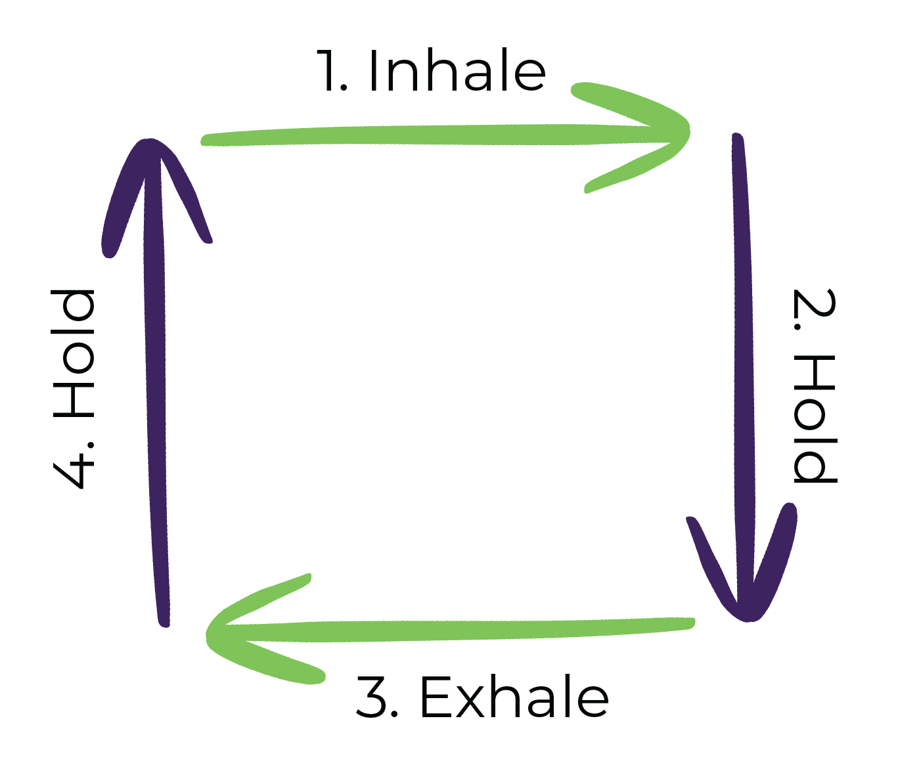

As KARES parents/caregivers, we may experience strain in our mental health from the point of our child’s diagnosis onward. In this blog, we discuss techniques to navigate these challenges and develop easy-to-implement coping strategies.
Listen to this post
Hope: Why does this matter?
Around the world, the stigma surrounding mental health is decreasing every day. As KARES parents/caregivers, we can continue this effort by:
Being aware of our attitudes and behavior. We should examine our own judgmental thinking reinforced by upbringing and society.
Choosing our words carefully. The way we speak can affect the attitudes of others.
Educating others. Pass on facts and positive attitudes; challenge myths and stereotypes.
Education: Did You Know?
Stigma prevents ~40% of people with depression and anxiety from seeking support. Community Health Partners
31% of all U.S. households serve as family caregivers for an ill or disabled relative. Luker 2023
~58% of caregivers are women. Sharma et. al., 2016
“Based on the hours they spend helping with activities of daily living and support services, caregivers of children with special needs have a more intensive caregiving experience than caregivers of adults” - National Alliance of Caregiving, 2009
Parents of medically fragile children were more likely to report symptoms of anxiety and depression than parents of healthy children. And were more likely to experience social isolation and feelings of guilt or inadequacy. - Journal of Family Psychology
Parents of children with chronic illnesses were more likely to report symptoms of PTSD than parents of healthy children. Also more likely to experience sleep problems, fatigue, and difficulty concentrating. - Pediatrics
What this does not mean is that if your child is less independent, that you will certainly struggle with mental health. It does, however, increase your chances. While taking note of your own mental health, it is important to provide emotional and mental health support to your other children as they navigate being a KARES family.
Activities: Exploring Coping Skills
1. Box Breathing
Box breathing is a technique that helps calm feelings of stress or anxiety and can be done anywhere. It is also a simple technique to learn as we will break down below:
First, picture a box and Inhale gradually as you fill your lungs with air and visualize yourself going across the top of the box (for example left to right).
When you get to the other end, Hold your breath for 1-5 seconds as you picture yourself going down the box.
Exhale gradually as you imagine traveling backwards (for example right to left) and
Hold one more time for about 5 seconds as you go to the top of the box and start the breathing pattern over.
For ease, follow the box below to you practice this breathing technique

This technique can be done multiple times and in different ways.
2. The Cognitive Triangle
This triangle demonstrates how our thoughts, feelings, and behaviors affect one another. Understanding how these three factors connect can equip you to take control of any situation even when, at first, it may not feel like it is possible.
One thing we can especially pay attention to is how we think. Let’s discuss some thinking errors here; you may be even able to point out some that you’ve found yourself practicing:
- All-or-Nothing Thinking: Where a person thinks in terms of extremes. For example, a parent may believe that their child’s disability is all bad and that there are no positive aspects to it.
- Overgeneralization: When a person takes one negative event and uses it to predict future outcomes. E.g: A Parent may assume that their child will never be able to learn a new skill because they had difficulty with it in the past.
- Mental Filtering: This is when a person focuses only on the negative aspects of a situation and ignores the positive. E.g a parent may only focus on the limitations of their child’s disability and overlook their strengths and abilities.
- Personalization: When a person takes responsibility for things that are outside of their control. E.g a parent blames themselves for their child’s diagnosis even though it is not their fault.
- Catastrophizing: When a person assumes the worst-case scenario will happen. E.g a parent may assume that their child will never be able to live independently or have a fulfilling life because of their disability.
- Emotional Reasoning: When a person assumes that their emotions are evidence of the truth. E.g, a parent may feel overwhelmed and assume that they are not capable of providing the best care for their child, even though they are doing their best.
- Labeling: When a person uses negative labels to describe themselves or others. E.g, a parent may label their child as “not capable” which can have a negative impact on their self-esteem.
Why spend so much time reflecting on your thoughts?
- Sometimes our thoughts and feelings can prevent us from reaching out and getting the support we need
- From our thoughts, come our actions. We may know what we ought to do but we have to pay attention to our thoughts so we can identify what keeps us from doing something that will benefit us/behavior that will build our social system
Future: Implementing New Habits
“Almost everything will work again if you unplug it for a few minutes, including you.” - Anne Lamott
If you find the coping techniques do not work for you, lean into therapy. There are different kinds of therapy such as EMDR for trauma, talk therapy, etc.
Resources
- PsychologyToday (if you live in America, you can see any therapist virtually in your state)
- Look at your insurance website to see what’s provided and covered
- Friend Referrals
- 988 – Suicide and Crisis Lifeline
Up Next
Now that you’ve taken time to learn about Mental Health as a KARES parent/caregiver, you can navigate to the Home Page for a list of all the blogs, or proceed to the next blog in the KARES Library: Conversations for Connection